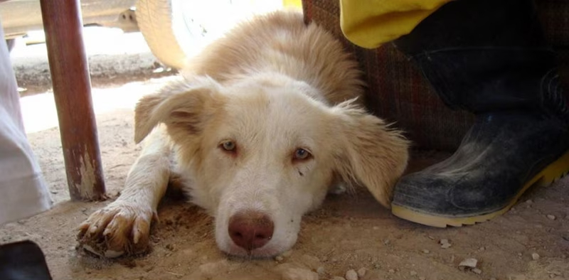

People who abuse animals typically do it by intentional abuse or animal hoarding. Intentional cruelty to animals is typically correlated with other violent crimes. Animal hoarding is typically done by people who have more animals than they can take care of. The most common animals abused are pets like dogs, cats, horses or livestock. However, our prosecution of these crimes is seriously lacking at best and non-existent on average. Organized cruelty, such as dogfighting or cockfighting, often go hand in hand with other organized crime too, such as drug cartels.
Meredith Lee, of the Humane Society of the United States, states that, "Intentional cruelty to animals is strongly correlated with other crimes, including violence against people," and Deena Ferguson, of the magazine Animals, also states that, "there is a strong connection between animal abuse and many antisocial behaviors, which can and often do include violent crimes against people," in their articles "Animal cruelty facts and stats" and "Chains of violence: a hard look at violence reveals a link between cruelty to animals and cruelty to people" respectively.
This tells us many things. For one, the American justice system should take animal abuse a lot more seriously than it does. To the American justice system, animal abuse is a joke and criminals get, at most, a slap on the wrist and, on average, nothing. According to these articles and many other articles, studies, and papers, animal abuse is not a joke and should be taken much more seriously in the legal system.
Even outside of the legal system, animal abuse should be taken very seriously. Animals, like us, feel emotions. They can feel happiness, excitement, pride, sadness, and pain. When people abuse animals, it is no better than abusing a human. For example, cats and dogs are much weaker than us and were bred to rely on us. When people abuse those poor animals, it is no better than abusing their own child. Of course, this does not exclude other forms of pets such as horses, livestock, or birds, since they were bred to rely on humans.
Our Mission
Animal cruelty is a disease that plagues the modern world. No matter how many technological advancements we as a species make, it does not make us any less of an animal than a dog, cat, or horse. The same pain that we feel can be felt by all other animals and we have no reason to willingly inflict pain and suffering on other creatures. Yet, we do. Tens of thousands of animals are abused every day. We strive to stop that. We know it is an impossible task, to stop animal cruelty. But it is still a task that must be done. We have people on the frontlines in courts, protests, rallies, adoption centers, etc. fighting on the frontlines to eliminate or, at the very least, minimize/lower the animal cruelty in our world.
How you can help
The best way you can help is by donating to an organization like us, that takes all the money they get from donations and puts it to helping animals in tough situations. Another way you can help for free is through your legal system by voting, protesting, or lobbying for judicial change in the treatment of animal abuse. When you donate to us, you get a bag of gifts, completely free, from us as a thank-you for your donation. 50% of our donations received will be donated directly to animal shelters in need and the other 50% will be distributed amongst our many projects on the frontlines against animal abuse. We really appreciate every donation and we need all the help and money we can get.

Your part counts
A large amount of people think "Oh, my vote doesn't matter," or "My $5 won't do any good." But this is simply not true. So many people think that and it leads to unfavorable situations, such as a bad politician winning the vote or a charity not getting as much money as it needs. Your vote DOES matter. Your $5 DO matter. Whatever you can do that can help WILL help. So if you're thinking about donating or supporting the cause through other means such as protesting, do it. It will matter.